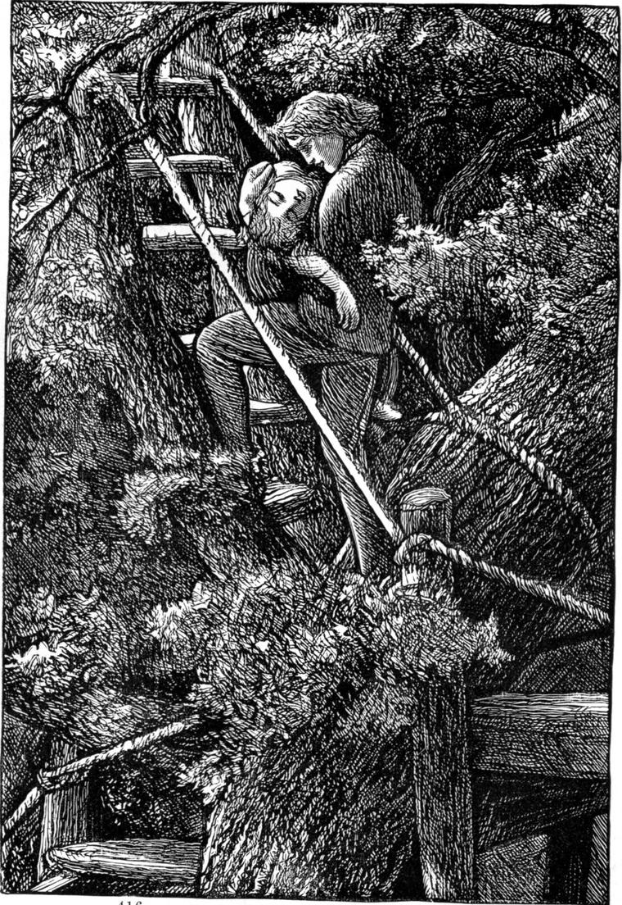

But Willie began to think whether he might not give Agnes two surprises out of it, with a dream into the bargain, and thought over it until he saw how he could manage it.
She always went to bed at seven o'clock, so that by the time the other people in the house began to think of retiring, she was generally fast asleep. About ten o'clock, therefore, the next night, just as a great round moon was peering above the horizon, with a quantity of mackerel clouds ready to receive her when she rose a yard or two higher, Willie, taking a soft shawl of his mother's, went into Agnes's room, and having wrapped her in the shawl, with a corner of it over her head and face, carried her out into the garden, down to the trees, and up the stair into the midst of the great boughs and branches of the elm tree. It was a very warm night, with a soft breath of south wind blowing, and there was no risk of her taking cold. He uncovered her face, but did not wake her, leaving that to the change of her position and the freshness of the air.
Nor was he disappointed. In a few moments she began to stir, then half-opened her eyes, then shut them, then opened them again, then rubbed them, then drew a deep breath, and then began to lift her head from Willie's shoulder, and look about her. Through the thick leaves the moon was shining like a great white fire, and must have looked to her sleepy eyes almost within a yard of her. Even if she had not been half asleep, so beheld through the leaves, it would have taken her a while to make up her mind what the huge bright thing was. Then she heard a great fluttering as if the leaves were talking to her, and out of them came a soft wind that blew in her face, and felt very sweet and pleasant. She rubbed her eyes again, but could not get the sleep out of them. As last she said to Willie, who stood as still as a stone—but her tongue and her voice and her lips could hardly make the words she wanted them to utter:
"Am I awake? Am I dreaming? It's so nice!"
Willie did not answer her, and the little head sunk on his shoulder again. He drew the corner of the shawl over it, and carried her back to her bed. When he had laid her down, she opened her eyes wide, stared him in the face for a moment, as if she knew all about everything except just what she was looking at, put her thumb in her mouth, and was fast asleep.
The next morning at breakfast, her papa out, and her mamma not yet come down, she told Willie that she had had such a beautiful dream!—that an angel, with great red wings, came and took her in his arms, and flew up and up with her to a cloud that lay close by the moon, and there stopped. The cloud was made all of little birds that kept fluttering their wings and talking to each other, and the fluttering of their wings made a wind in her face, and the wind made her very happy, and the moon kept looking through the birds quite close to them, and smiling at her, and she saw the face of the man in the moon quite plain. But then it grew dark and began to thunder, and the angel went down very fast, and the thunder was the clapping of his big red wings, and he flew with her into her mamma's room, and laid her down in her crib, and when she looked at him he was so like Willie.
Agnes?" asked Willie.
"I don't know. Perhaps," replied Agnes. "Are you angry with me for wishing I was a bird, Willie?"
"No, darling. What makes you ask such a question?"
"Because ever since then you won't let me go with you—when you are doing things, you know."
"Why, you were in the laboratory with me yesterday!" said Willie.
"Yes, but you wouldn't have me in the evening when you used to let me be with you always. What are you doing down amongst the trees always now?"
"If you will have patience and not go near them all day, I will show you in the evening."
Agnes promised; and Willie gave the whole day to getting things on a bit. Amongst other things he wove such a network along the bough of the Scotch fir, that it was quite safe for Agnes to walk on it down to the great red hole of the tree. There he was content to make a pause for the present, constructing first, however, a little chair of bough and branch and rope and twig in which she could safely sit.
Just as he had finished the chair, he heard her voice calling, in a tone that grew more and more pitiful.
"Willie!—Willie!—Willie!—Willie!"
He got down and ran to find her. She was at the window of his room, where she had gone to wait till he called her, but her patience had at last given way.
"I'm so tired, Willie! Mayn't I come yet?"
"Wait just one moment more," said Willie, and ran to the house for his mother's shawl.
As soon as he began to wrap it about her, Agnes said, thoughtfully—
"Somebody did that to me before—not long ago—I remember: it was the angel in my dream."
When Willie put the corner over her face, she said, "He did that too!" and when he took her in his arms, she said, "He did that too! How funny you should do just what the angel did in my dream!"
Willie ran about with her here and there through the ruins, into the house, up and down the stairs, and through the garden in many directions, until he was satisfied he must have thoroughly bewildered her as to whereabouts they were, and then at last sped with her up the stair to the fork of the elm-tree. There he threw back the shawl, and told her to look.
To see her first utterly bewildered expression—then the slow glimmering dawn of intelligence, as she began to understand where she was—next the gradual rise of light in her face as if it came there from some spring down below, until it broke out in a smile all over it, when at length she perceived that this was what he had been working at, and why he wouldn't have her with him—gave Willie all the pleasure he had hoped for—quite satisfied him, and made him count his labour well rewarded.

"O Willie! Willie! it was all for me!—Wasn't it now?"
"Yes, it was, pet," said Willie.
"It was all to make a bird of me—wasn't it?" she went on.
"Yes—as much of a bird as I could. I couldn't give you wings, you know, and I hadn't any of my own to fly up with you to the moon, as the angel in your dream did. The dream was much nicer—wasn't it?"
"I'm not sure about that—really I'm not. I think it is nicer to have a wind coming you don't know from where, and making all the leaves flutter about, than to have the wings of birdies making the wind. And I don't care about the man in the moon much. He's not so nice as you, Willie. And yon red ray of the sun through there on the fir-tree is as good nearly as the moon."
"Oh! but you may have the moon, if you wait a bit. She'll be too late to-night, though."
"But now I think of it, Willie," said Agnes, "I do believe it wasn't a dream at all."
"Do you think a real angel carried you really up to the moon, then?" asked Willie.
"No; but a real Willie carried me really up into this tree, and the moon shone through the leaves, and I thought they were birds. You're my angel, Willie, only better to me than twenty hundred angels."
And Agnes threw her arms round his neck and hugged and kissed him.
As soon as he could speak, that is, as soon as she ceased choking him, he said—
"You were up in this tree last night: and the wind was fluttering the leaves; and the moon was shining through them"—
"And you carried me in this shawl, and that was the red wings of the angel," cried Agnes, dancing with delight.
"Yes, pet, I daresay it was. But aren't you sorry to lose your big angel?"
"The angel was only in a dream, and you're here, Willie. Besides, you'll be a big angel some day, Willie, and then you'll have wings, and be able to fly me about."
"But you'll have wings of your own then, and be able to fly without me."
"But I may fold them up sometimes—mayn't I? for it would be much nicer to be carried by your wings—sometimes, you know. Look, look, Willie! Look at the sunbeam on the trunk of the fir—how red it's got. I do wish I could have a peep at the sun. Where can he be? I should see him if I were to go into his beam there—shouldn't I?"
"He's shining past the end of the cottage," said Willie. "Go, and you'll see him."
"Go where?" asked Agnes.
"Into the red sunbeam on the fir-tree."
"I haven't got my wings yet, Willie."
"That's what people very often say when they're not inclined to try what they can do with their legs."
"But I can't go there, Willie."
"You haven't tried."
"How am I to try?"
"You're not even trying to try. You're standing talking, and saying you can't."
It was nearly all Agnes could do to keep from crying. But she felt she must do something more lest Willie should be vexed. There seemed but one way to get nearer to the sunbeam, and that was to go down this tree and run to the foot of the other. What if Willie had made a stair up it also? But as she turned to see how she was to go down, for she had been carried up blind, she caught sight of the straight staircase between the two boughs, and, with a shriek of delight, up she ran.
"Gently, gently! Don't bring the tree down with your tremendous weight," cried Willie, following her close behind.
At the end of the stairs she sprang upon the bough of the fir, and in a moment more was sitting in the full light of the sunset.
"O Willie! Willie! this is grand! How good, how kind of you! You have made a bird of me! What will papa and mamma say? Won't they be delighted? I must run and fetch Mona."
So saying she hurried across again, and down the stair, and away to look for Mona Shepherd, shouting with delight as she ran. In a few minutes her cries had gathered the whole house to the bottom of the garden, as well as Mr Shepherd and Mona and Mrs Hunter. Mr Macmichael and all of them went up into the tree, Mr Shepherd last and with some misgivings; for, having no mechanical faculty himself, he could not rightly value Willie's, and feared that he might not have made the stair safe. But Mr Macmichael soon satisfied him, showing him how strong and firm Willie had made every part of it.
The next evening, Willie went on with his plan, which was to make a way for Bird Agnes from one tree to another over the whole of the clump. It took him many evenings, however, to complete it, and a good many more to construct in the elm tree a thin wooden house cunningly perched upon several of the strongest boughs and branches. He called it Bird Agnes's Nest. It had doors and windows, and several stories in it, only the upper stories did not rest on the lower, but upon higher branches of the tree. To two of these he made stairs, and a rope-ladder to a third. When the house was finished, he put a little table in the largest room, and having got some light chairs from the house, asked his father and mother and grandmother to tea in Bird Agnes's Nest. But grannie declined to go up the tree. She said her climbing days were over long ago.